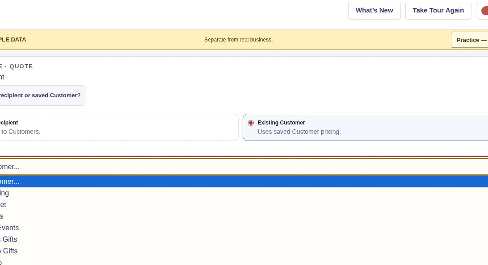
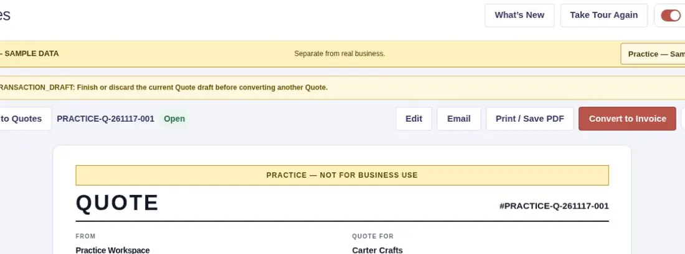
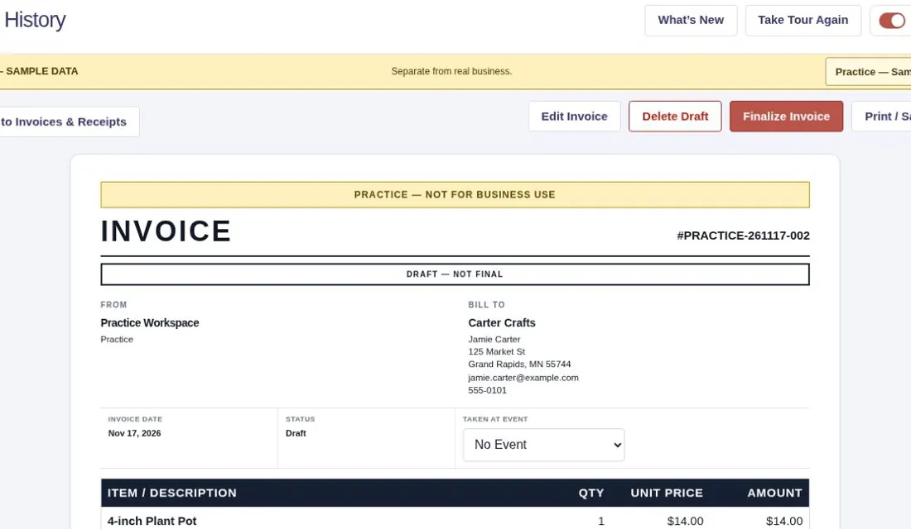

Quotes
Prepare an estimate before creating an invoice.
Create a Quote
- Choose New Sale → Quote.
- Select a Customer and add items.
- Review pricing, discounts and notes.
- Save the Quote.
Send or print
Open a saved Quote to print, save PDF or email it.
Watch: Convert a Quote to an Invoice
Recorded in Practice — Sample Data. Follow along in Practice without changing real Business records, or switch to Business to enter your own information.



Convert to Invoice
Use Convert to Invoice when the customer accepts. The original Quote remains linked and read-only after conversion.
Find and manage Quotes
Open Quotes or Global Search. Editing, voiding and deleting are restricted according to document history.